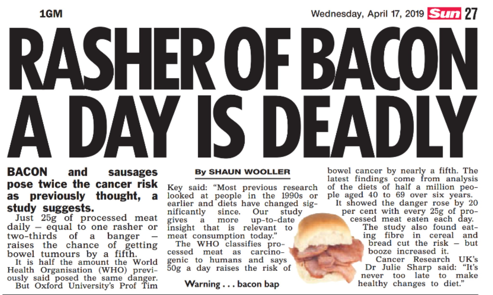

Trust in numbers (Sir David Spiegelhalter) – talk notes
The Institute of Medical Statistics of the Center for Medical Statistics, Informatics and Intelligent Systems at the Medical University of Vienna just turned 50 years old, and they organized a two-day event around it. I was fortunate to have attended the keynote talk of Sir David Spiegelhalter (wiki), who is a British statistician and Winton Professor of the Public Understanding of Risk at the Faculty of Mathematics, University of Cambridge, which was one of the most entertaining and informative talk I have heard. There is no way I can do justice to the talk, and I wouldn’t even attempt to bring through the humor (his humour) – the goal of this post is to increase your vigilance a little bit when it comes to any reports about science, and to shed light on the work of Spiegelhalter.
The professor has authored several academic books on statistics, and was interviewed by the CNN with the title, Why statistics should make you suspicious. And keeps doing a huge service to science in a number of other ways.
The problem explained in the talk was that numbers are used to persuade people, not to inform them. (Actually, that was only the first half – the second half offered a handful of steps we could take when presenting our data.) Take for example politics, and the campaign around Brexit. Even if it were true that it costs £350 million a week for the UK to be a member of the EU, it would be much less misleading if it said that it costs 80 pence per person per day to be a member of the EU. The cost of a bag of potato chips. (The other side committed similar errors too – I’m not trying to win a battle here.)
As Eliezer Yudkowsky says, politics is the mind-killer, but of course, using numbers to mislead instead of to show an honest representation of reality is done everywhere where there are numbers. My favorite topic these days: medical statistics. I’m picking a topic from the talk as an example (which Spiegelhalter analyzed in more detail in a Medium post): dietary advice about processed meat consumption. CNN did a great job with picking the title of their article to be as close to the original conclusions as possible: Eating just one slice of bacon a day linked to higher risk of colorectal cancer, says study. But by the time this study reaches The Sun, it gets reported as the following:
.
Boy, that escalated quickly. And what does “higher risk of colorectal cancer” mean anyhow? In this case, the study showed a 19% increase. As Peter Attia explains in his detailed post series on science, Studying Studies, such big numbers generally mean an increase in relative risk, not in absolute risk. Relative risk is meaningless without knowing the base rate of the disease. In this case, 5% of US men and women born today are expected to be diagnosed with colorectal cancer sometime during their lives. Add 19% to that 5% figure (i.e., multiply it by 1.19), and you get 6%, for the people who eat 1 slice of bacon a day. (The 5% figure is surprisingly high, by the way! Fortunately, it has a five-year survival rate of 65%. I don’t know how much of the 5% is a false positive; I guess it doesn’t include the disconfirmed cases. These figures I just gathered from Wikipedia, FWIW.)
You can take the extra step and visualize these numbers using what Gigerenzer calls natural frequencies. As one Wikipedia author puts it, “the problem is not simply in the human mind, but in the representation of the information”, so let’s deliver using things we evolved to understand: a small tribe of human-like icons.
All of these people below eat a clean diet without processed meat, and those with a distraught face will get colorectal cancer:
😎😎😎😎😎😎😫😎😎😎
😎😎😎😎😎😎😎😎😎😎
😎😎😎😎😎😎😎😎😎😎
😎😎😎😫😎😎😎😎😎😎
😎😎😫😎😎😎😎😎😎😎
😎😎😎😎😎😎😎😎😎😎
😎😎😎😎😎😎😎😎😎😫
😎😎😎😎😎😎😎😎😎😎
😎😎😎😎😎😎😎😎😎😎
😎😎😎😎😎😎😎😫😎😎
And all of these people eat a slice of Extrawurst daily:
😎😎😎😎😎😎😫😎😎😎
😎😎😎😎😎😎😎😎😎😎
😎😎😎😎😎😎😎😎😎😎
😎😎😎😫😎😎😎😎😎😎
😎😎😫😎😎😎😎😎😎😎
😎😎😎😎😎😎😎😎😎😎
😎😎😎😎😎😎😎😎😎😫
😎😎😎😎😎😎😎😎😎😎
😫😎😎😎😎😎😎😎😎😎
😎😎😎😎😎😎😎😫😎😎
See the difference? It’s that one troubled guy in row 9.
Now, I’m not saying bacon is good for health, or that that additional risk factor would be negligible (admittedly, my mocking tone above suggests otherwise). But if the scientists, journalists, and clinicians report the risk honestly, and no-one is trying to influence you into eating more burgers by playing at our primal instincts (including the marketing division of McDonald’s and our social group who calls you chicken if you don’t eat your black pudding), then us puny humans could make more educated decisions about which sacrifices we are willing to make.
This post was just a tiny part of what was said at the talk. In parting, I have two takeaway quotes. First,
80% of statistics are false.
(From anonymous statistician, a comedian, and also Elon Musk.) Unfortunately, this factoid alone doesn’t enable one to navigate reality.
The second quote is of a little more value, but still doesn’t help one to sieve through statistics:
There’s no point in being trustworthy if you’re boring.
(From Spiegelhalter in today’s talk.)
This talk was anything but boring. If you have a chance to see Spiegelhalter in person, do so: he gets my highest grade recommendation. (He also has a book, titled The Art of Statistics, which I haven’t read.)
(Somewhat related: just today on my way home I learned of Edward Tufte’s book, The Visual Display of Quantitative Information, which also looks amazing.)